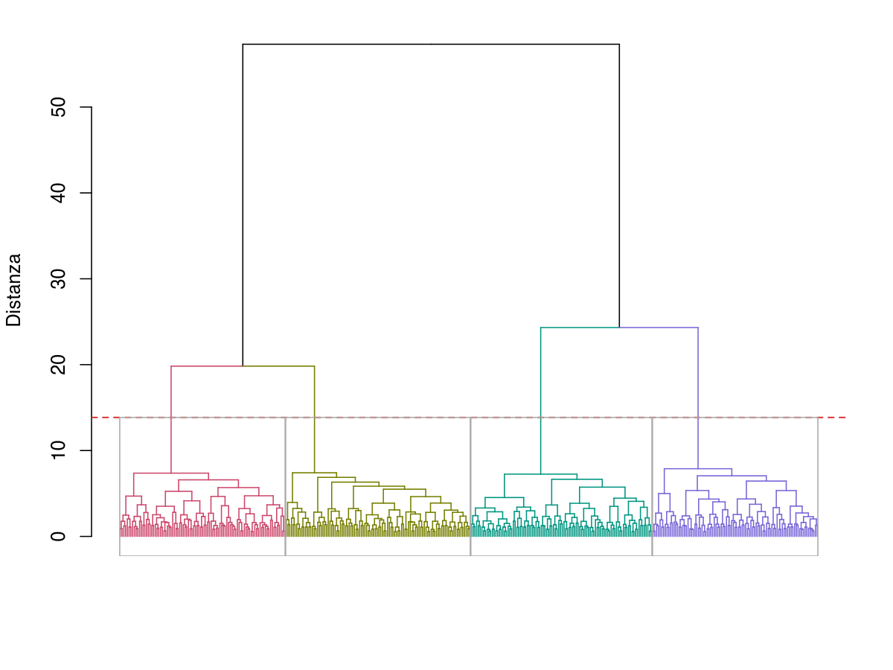
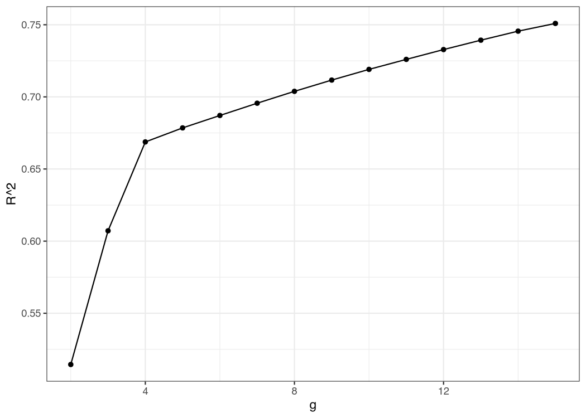
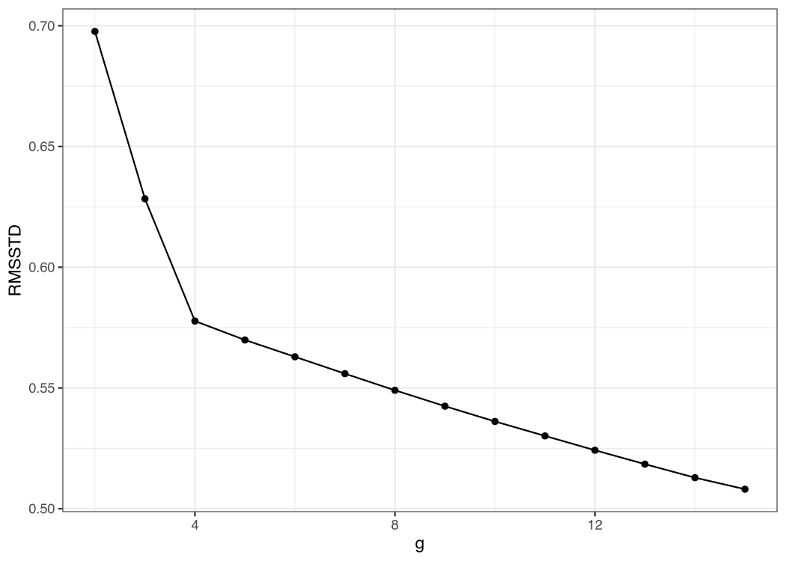
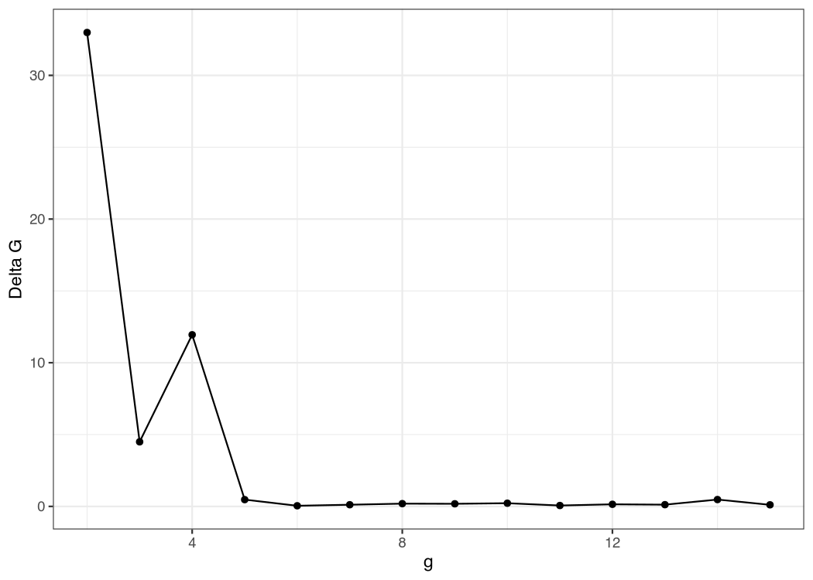
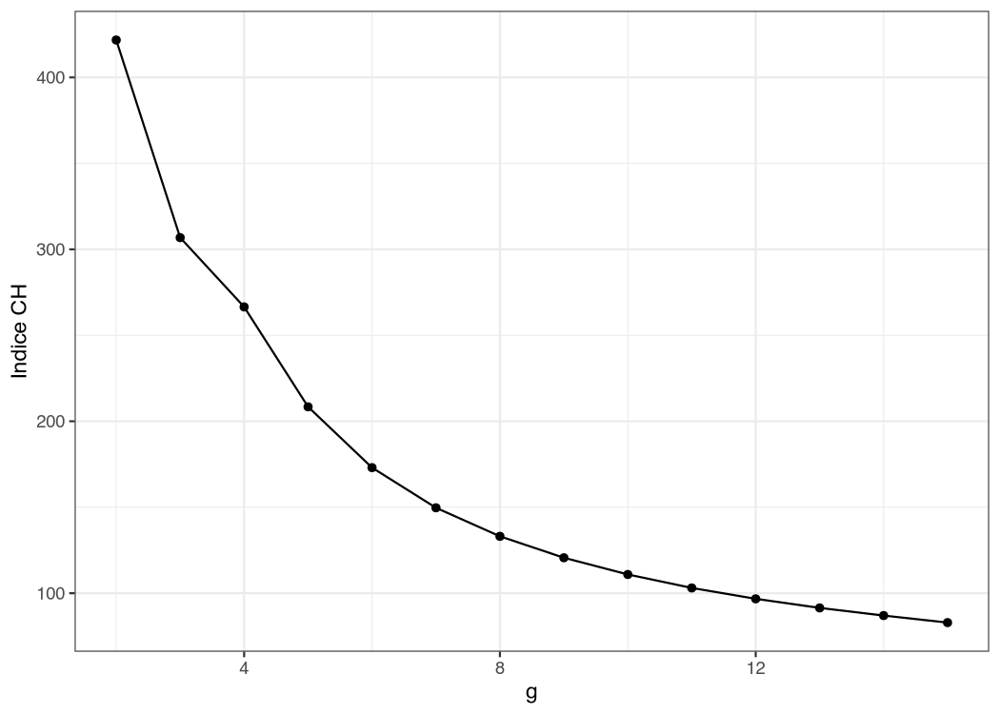

26 Scelta di k e dendrogramma
Decidere il numero di cluster \(k\) è il momento più delicato di una segmentazione. Questo capitolo presenta i quattro indici implementati dal modulo e le strategie per leggerli insieme al dendrogramma.
26.1 Il dendrogramma
Il dendrogramma è la rappresentazione gerarchica della sequenza di unioni: ogni “altezza” sull’asse y corrisponde alla distanza di fusione dei due cluster.

Come si legge:
- Cluster vicini si fondono in basso (altezze piccole).
- Cluster lontani si fondono in alto.
- Tagliando il dendrogramma con una linea orizzontale a una certa altezza, si ottengono \(k\) cluster.
- In
AnalisiMercatoi rami sono colorati per cluster e la linea di taglio è disegnata automaticamente al \(k\) scelto nelle opzioni.
Si cerca un’altezza dove i prossimi salti di fusione sono molto più grandi dei precedenti: indica che si stanno fondendo cluster “veramente diversi”. Il taglio appena sotto quel salto fornisce \(k\).
26.2 I quattro indici quantitativi
I quattro grafici di questa sezione non sono illustrazioni generiche: sono l’output del modulo sullo stesso dataset della Figura 26.1, cioè l’esempio discusso per esteso più avanti (Sezione 26.4). Vanno quindi letti insieme, ed è quello che fanno le didascalie.
26.2.1 R²
\[ R^2(k) = 1 - \frac{\text{WSS}(k)}{\text{TSS}} \]
- WSS = devianza entro i gruppi (within sum of squares); TSS = devianza totale (total sum of squares).
- Cresce da 0 (un solo cluster) verso 1: al limite teorico \(k = n\), con ogni unità in un cluster a sé, WSS si annulla e \(R^2 = 1\). È un limite puramente teorico —
AnalisiMercatorifiuta \(k \geq n\) e tabula gli indici per \(k\) da 2 a \(\min(15,\, n-1)\). - Cercare il gomito: il punto oltre cui la pendenza diminuisce drasticamente.

26.2.2 RMSSTD
Deviazione standard media dei gruppi (RMSSTD, Root-Mean-Square Standard Deviation):
\[ \text{RMSSTD}(k) = \sqrt{\frac{\text{WSS}(k)}{(n - k) \cdot p}} \]
- Misura la “compattezza media” dei cluster.
- Tende a diminuire al crescere di \(k\), senza che la monotonia sia garantita in ogni dataset. Si cerca il punto oltre il quale i miglioramenti diventano modesti.

26.2.3 Delta G
Indichiamo con \(H_k\) l’altezza della fusione che porta la soluzione da \(k\) a \(k-1\) cluster. Delta G confronta due fusioni consecutive:
\[ \Delta G(k) = H_k - H_{k+1} \]
Un valore elevato di \(\Delta G(k)\) dice che la fusione da \(k\) a \(k-1\) cluster costa molto più di quella che aveva portato da \(k+1\) a \(k\).
- Picco a \(k\) → conviene tenere \(k\) cluster, evitando la fusione particolarmente onerosa che porterebbe a \(k-1\).
- È l’indice calcolato dal modulo alla riga \(k\) della tabella delle metriche: il valore mostrato è sempre il salto associato alla fusione da \(k\) a \(k-1\).

26.2.4 Indice CH (Caliński-Harabasz)
\[ \text{CH}(k) = \frac{\text{BSS}(k)/(k-1)}{\text{WSS}(k)/(n-k)} \]
- BSS = devianza fra i gruppi (between sum of squares).
- Valori più alti dell’indice di Caliński-Harabasz (CH) indicano partizioni preferibili secondo questo criterio: il massimo fra i \(k\) candidati suggerisce un possibile numero di gruppi, da confermare con gli altri indici e con l’interpretabilità.
- Penalizza \(k\) alti (più cluster = più parametri).

R², RMSSTD e indice CH sono tutti definiti sulla devianza rispetto ai centroidi: richiedono variabili quantitative, perché di un insieme di modalità nominali non esiste una media. Se la base della segmentazione contiene variabili categoriali trattate come tali — il caso tipico di Gower su dati misti, ma vale anche per Sokal-Michener e per i due Jaccard applicati a fattori — le tre colonne restano vuote, una nota sotto la tabella lo spiega e i tre grafici corrispondenti non vengono prodotti. Fa eccezione un fattore con modalità numeriche usato con Euclidea, Manhattan o Mahalanobis: il modulo lo converte in numeri (segnalandolo con una nota) e i tre indici vengono calcolati normalmente.
Resta disponibile Delta G, che dipende soltanto dalle altezze di fusione del dendrogramma e vale quindi per qualunque metrica. In quel caso la scelta di \(k\) si basa su Delta G, sul gomito visivo del dendrogramma e sull’interpretabilità dei profili.
26.3 Strategia per scegliere \(k\)
Nessun indice è infallibile. La pratica raccomandata è:
- Ispezionare il dendrogramma per identificare 2–3 candidati \(k\).
- Confrontare i quattro grafici: cercare convergenza fra gomito di R²/RMSSTD, picco di ΔG, massimo di CH.
- Provare ogni candidato rieseguendo la cluster analysis gerarchica (HC, hierarchical clustering) con quel \(k\) e caratterizzando i cluster (§ P-19).
- Scegliere il \(k\) con cluster più interpretabili: la segmentazione esiste per essere usata, non solo “ottimizzata”.
È frequente, ed è la norma più che l’eccezione. Tipicamente:
- R² cresce sempre con \(k\): da solo non indica mai un massimo, va letto cercando il gomito.
- CH e ΔG premiano le separazioni nette e, quando i dati hanno una struttura gerarchica a due livelli, tendono a segnalare il livello più grossolano (pochi macro-gruppi), anche se il livello di dettaglio interessante è più fine. L’esempio qui sotto è esattamente questo caso.
- Il dendrogramma e la caratterizzazione fanno da arbitro finale: una partizione utile è una partizione che si sa descrivere.
26.4 Esempio pratico
Continuando l’esempio del § P-17 su survey_segmentazione.csv:
Configurazione: gli 8 item Likert, distanza Euclidea, metodo di Ward, standardizzazione attiva (\(n = 400\), \(p = 8\)). Questi sono i valori che il modulo produce davvero:
| \(k\) | R² | RMSSTD | ΔG | CH |
|---|---|---|---|---|
| 2 | 0,514 | 0,698 | 32,99 | 421,7 |
| 3 | 0,607 | 0,628 | 4,49 | 306,8 |
| 4 | 0,669 | 0,578 | 11,95 | 266,5 |
| 5 | 0,679 | 0,570 | 0,47 | 208,4 |
| 6 | 0,687 | 0,563 | 0,04 | 173,0 |
Lettura. Questi numeri sono esattamente quelli disegnati nei quattro grafici della sezione precedente. Messi in fila, i cinque output dicono così:
| Output | Che cosa indica | \(k\) suggerito |
|---|---|---|
| Dendrogramma (Figura 26.1) | Ampia banda di altezze (≈ 8-20) in cui la partizione non cambia | 4 |
| \(R^2\) (Figura 26.2) | Gomito netto: +6,2 punti da 3 a 4, +1,0 da 4 a 5 | 4 |
| RMSSTD (Figura 26.3) | Stesso gomito, letto al contrario | 4 |
| ΔG (Figura 26.4) | Massimo assoluto a 2, secondo picco netto a 4 | 2, poi 4 |
| Indice CH (Figura 26.5) | Massimo al bordo, decrescita monotona | 2 |
È un caso realistico di indici in disaccordo, e va letto come tale — non come un fallimento del metodo. Il disaccordo è però apparente, perché i due gruppi di indici stanno rispondendo a due domande diverse.
CH e ΔG guardano la separazione più netta in assoluto, e quella è la divisione in due macro-gruppi: nel dendrogramma i due rami principali si uniscono a distanza 57, contro il 24 della fusione successiva. Qualunque criterio globale premia quel taglio.
R², RMSSTD e la forma del dendrogramma guardano invece quanto si guadagna continuando a dividere, e lì il segnale è inequivocabile: da 3 a 4 gruppi la varianza spiegata sale di oltre 6 punti (0,607 → 0,669), da 4 a 5 guadagna un punto scarso (0,669 → 0,679), da 5 a 6 ancora meno. E il ΔG, che pure ha il massimo a 2, mostra a \(k = 4\) un secondo picco a 11,95 — quasi tre volte il valore a 3 e venticinque volte quello a 5. Scendere da quattro a tre gruppi costa molto: i quattro gruppi sono realmente distinti fra loro.
Si sceglie \(k = 4\), e la scelta coincide con i quattro segmenti con cui il dataset sintetico è stato generato: il § P-20 lo verifica con l’indice di Rand corretto (ARI, Adjusted Rand Index), che vale 0,873. Non è però una coincidenza fortunata a giustificarla: le due letture sono entrambe corrette e descrivono due livelli della stessa struttura. Con \(k = 2\) si ottiene la divisione più solida che i dati contengano — chi è orientato a marca e qualità contro chi è orientato a prezzo e comodità — e con \(k = 4\) la si articola in segmenti su cui si può differenziare l’offerta. Per una segmentazione di mercato serve il secondo livello, e per questo si scende a quattro.
Non «quale indice ha ragione», ma «a quale livello di dettaglio serve la partizione». Gli indici misurano quanto una partizione è compatta e separata; non sanno nulla dell’uso che se ne farà. Due segmenti perfettamente separati ma troppo generici per costruirci sopra un assortimento sono un buon risultato statistico e un cattivo risultato di ricerca.
In pratica: si prendono i due o tre \(k\) candidati che i grafici segnalano, si eseguono tutti, si caratterizzano i cluster (§ P-19) e si sceglie quello che si sa descrivere. Nel report vanno riportati tutti i candidati e la ragione della scelta, non solo il vincitore.
26.5 Salvataggio dei cluster
Una volta scelto \(k\) definitivo:
- Impostare Numero di gruppi = 4.
- Verificare che Nome della variabile di output sia “Cluster” (o personalizzato).
- Spuntare la casella Etichetta cluster (è disattivata di default): jamovi aggiunge al dataset la colonna
Clustercon valori 1–4.
A questo punto la colonna è disponibile per:
26.6 Errori comuni
- ❌ Decidere \(k\) solo dal dendrogramma: l’occhio è soggettivo, usare gli indici come controllo.
- ❌ Fissarsi su \(k\) alti: oltre \(k = 6{-}7\) la segmentazione diventa difficile da raccontare in un report.
- ❌ Ignorare cluster molto piccoli: un gruppo di poche osservazioni può nascere da outlier, ma può anche essere una nicchia reale. Va ispezionato prima di decidere se rimuovere osservazioni o cambiare soluzione.